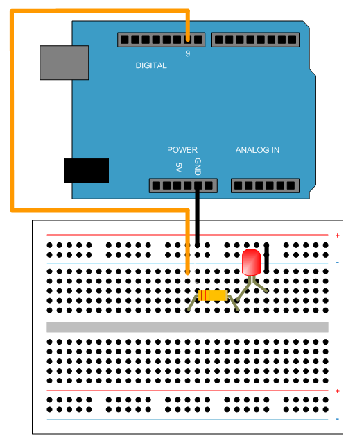
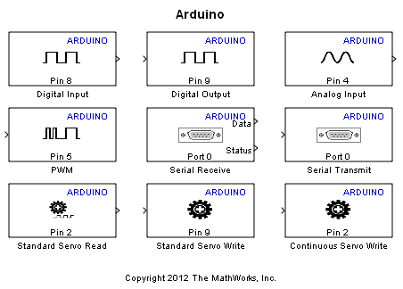

Getting Started with Arduino® Uno Hardware
This example introduces you to Target for Use with Arduino Uno Hardware and shows you how to run a Simulink® model on Arduino Uno board.
Contents
- Introduction
- Prerequisites
- Required Hardware
- Task 1 - Connect an LED to an Arduino Output Pin
- Task 2 - Review Arduino Block Library
- Task 3 - Create a Model for Arduino Uno Hardware
- Task 4 - Configure the Model to Run on Arduino Uno Hardware
- Task 5 - Run the Model on Arduino Uno Hardware
- Other Things to Try
- Summary
Introduction
Target for Use with Arduino Uno Hardware enables you to create and run Simulink models on Arduino Uno board. The target includes a library of Simulink blocks for configuring and accessing Arduino sensors, actuators and communication interfaces.
In this example you will learn how to create and run a simple Simulink model on Arduino Uno board. See other examples for Arduino Uno board to learn how to implement more complex algorithms.
Prerequisites
If you are new to Simulink, we recommend completing Interactive Simulink Tutorial, reading the Simulink Getting Started documentation and running Simulink Getting Started example.
Required Hardware
To run this example you will need the following hardware:
- Arduino Uno board
- USB cable
- LED
- 220 Ohm resistor
- Breadboard wires
- Small breadboard (recommended)
Task 1 - Connect an LED to an Arduino Output Pin
In this task, you will connect an LED to an Arduino output pin so you can see changes in the logical state of the pin.
1. Attach one end of the 220 Ohm resistor to output pin 9 on the Arduino Uno board. Use the recommended breadboard and the breadboard wires.
2. Attach the long leg (positive) of the LED to the resistor. Attach the short leg (negative) to the ground pin on the Arduino Uno board.

Task 2 - Review Arduino Block Library
Target for Use with Arduino Uno Hardware provides an easy way to create algorithms that use Arduino sensors and actuators by using the blocks that can be added to your Simulink model. The blocks are used to configure the associated sensors and actuators, as well as to read and write data to them.
1. Enter simulink at the MATLAB® prompt. This opens the Simulink Library Browser.
2. In the Simulink Library Browser, navigate to Target for Use with Arduino Hardware.
3. Double-click the Digital Output block. Review the block mask, which contains a description of the block and parameters for configuring the associated Arduino digital output pin.
Task 3 - Create a Model for Arduino Uno Hardware
In this task, you will create a simple Simulink model that changes the state of the Arduino digital output pin.
1. In MATLAB, select File > New > Model.
2. Drag the Pulse Generator block from the Simulink Sources library to your model.
3. Double-click the Pulse Generator block. Set the Pulse type to parameter to Sample based and set the Sample time parameter to 0.1 second.
4. Drag the Digital Output block to the model. Use the default block settings.
5. Connect the Pulse Generator block to the Digital Output block.
Task 4 - Configure the Model to Run on Arduino Uno Hardware
In this task, you will configure your model to run on the Arduino Uno board.
1. In your model, select Tools > Run on Target Hardware > Prepare to Run....
2. Review the parameters in the dialog that opens. Unless already set, set the Target hardware parameter to Arduino Uno. Do not change any other settings.
3. Click OK.
4. Save your model.
A pre-configured model is included for your convenience.
Task 5 - Run the Model on Arduino Uno Hardware
In this task, you will run your model on the Arduino Uno board.
1. Connect the Arduino Uno board to your computer with a USB cable.
2. In your Simulink model, select Tools > Run on Target Hardware > Run.
3. Look at the LED attached to pin 9. The LED should blink one time every second.
Other Things to Try
Experiment with other blocks in the Arduino block library. For example:
- Create and run a model that turns the LED on if a signal is applied to a digital input pin.
- Create and run a model that repeatedly brightens and dims an LED. Hint: use the PWM block.
Summary
This example introduced the workflow for creating an algorithm from a Simulink model and then running it on Arduino Uno board. In this example you learned that:
- Target for Use with Arduino Uno Hardware provides blocks for configuring, reading from and writing to Arduino sensors and actuators.
- You can use the options under Tools > Run on Target Hardware menu to prepare, configure and run the model on Arduino Uno board.